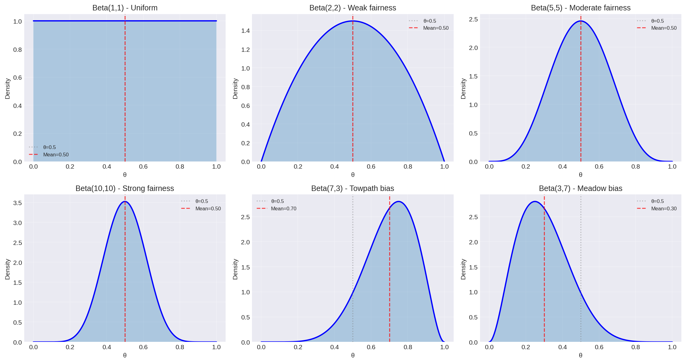
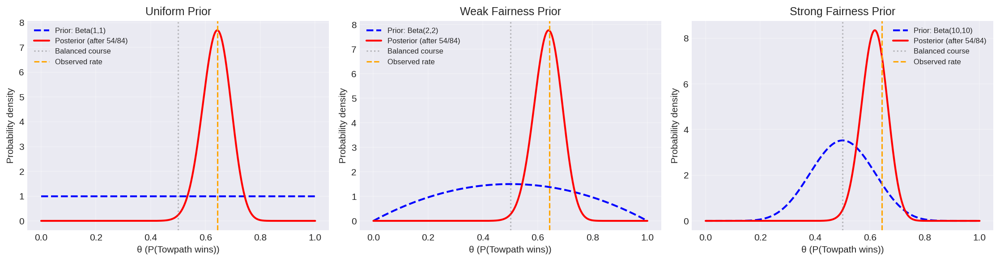
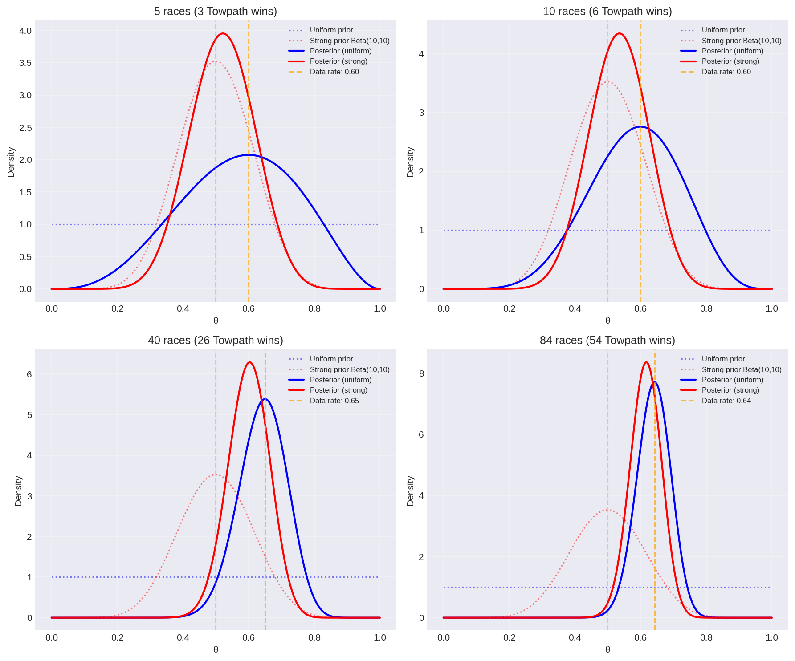

Analytical Update (Rowing)
Analytical Bayesian Update: The Rowing Example
← Back to index | Previous: bayes-theorem
A Real Problem: Is the Course Balanced?
In the 1999s Rowbridge Reborn regatta, there were 84 races on the River Cam: - Towside (towpath side) won 54 races - Meadow side won 30 races
Context: Like a 400m running track, the river has a bend. To compensate, the race organizers deliberately skewed the finish line toward Meadow side to make the course fair.
Sides are randomly assigned to crews before each race, so this isn't about which crews are better.
Question: Is the finish line skew sufficient to balance the course, or does Towpath still have an advantage?
Frequentist answer: Hypothesis test gives p-value = 0.0043, "significant evidence that towpath side is faster."
The snarky comment: "Maybe the finish line being skewed in favour of meadow isn't something to complain about" — i.e., the skew was supposed to help Meadow, but Towpath wins anyway!
Let's quantify this properly with Bayesian inference.
Setting Up the Problem
The Parameter
Let \(\theta\) = probability that Towpath side wins a race (with random crew assignment).
- If \(\theta = 0.5\): Course is balanced (finish line skew compensates for bend perfectly)
- If \(\theta > 0.5\): Towpath has geometric advantage (finish line skew is insufficient)
- If \(\theta < 0.5\): Meadow has advantage (finish line skew overcompensates)
The Data
We observed \(n = 84\) races with \(k = 54\) Towpath wins.
The Beta-Binomial Model
This is a classic conjugate pair (same setup as the coin flip example).
The Likelihood
Given \(\theta\), the probability of observing \(k\) wins in \(n\) races follows the Binomial distribution:
Substituting our data (\(n=84\), \(k=54\)):
The Prior
We need to choose a prior \(\pi(\theta)\) on \([0,1]\). The Beta distribution is the natural choice:
But what values for \(\alpha\) and \(\beta\)? See prior-choice for a detailed discussion. For now, let's try a few:
Option 1: Uniform prior \(\text{Beta}(1, 1)\) - "I have no idea if there's an advantage" - Every value of \(\theta\) is equally likely a priori
Option 2: Weak fairness prior \(\text{Beta}(2, 2)\) - "I weakly believe the organizers set the finish line correctly (\(\theta \approx 0.5\))" - Equivalent to having seen 1 Towpath win and 1 Meadow win before
Option 3: Strong fairness prior \(\text{Beta}(10, 10)\) - "I strongly believe the organizers measured the course carefully and balanced it" - Equivalent to having seen 9 wins each side in test races - Requires stronger data to conclude the course is imbalanced
What Do These Priors Look Like?
Different Beta distributions encode different beliefs:

Key observations: - Beta(1,1) is flat — complete uncertainty - Symmetric Betas (α=β) are peaked at 0.5 - Larger α+β = stronger prior (narrower distribution) - Asymmetric Betas (α≠β) encode bias toward one outcome
The Posterior
Using bayes-theorem, the posterior is:
This is another Beta distribution!
Beautiful conjugacy: Prior beliefs (encoded as \(\alpha-1\) Towpath wins, \(\beta-1\) Meadow wins) combine additively with observed data (\(k\) Towpath wins, \(n-k\) Meadow wins).
Computing the Posteriors
Case 1: Uniform Prior \(\text{Beta}(1,1)\)
Posterior: \(\text{Beta}(1 + 54, 1 + 30) = \text{Beta}(55, 31)\)
Posterior mean: $\(\mathbb{E}[\theta] = \frac{\alpha}{\alpha+\beta} = \frac{55}{86} \approx 0.640\)$
95% credible interval:
from scipy.stats import beta
import numpy as np
# Posterior distribution
posterior = beta(55, 31)
# Credible interval
lower, upper = posterior.ppf([0.025, 0.975])
print(f"θ = {posterior.mean():.3f}")
print(f"95% CI: [{lower:.3f}, {upper:.3f}]")
Output:
Interpretation: There's a 95% probability that Towpath's win rate is between 54.7% and 72.8%. The data strongly support that the course is imbalanced — the finish line skew doesn't fully compensate for the bend.
Case 2: Weak Fairness Prior \(\text{Beta}(2,2)\)
Posterior: \(\text{Beta}(56, 32)\)
Posterior mean: \(\frac{56}{88} \approx 0.636\)
95% CI: \([0.544, 0.724]\)
Nearly identical to the uniform prior—the data dominate.
Case 3: Strong Fairness Prior \(\text{Beta}(10,10)\)
Posterior: \(\text{Beta}(64, 40)\)
Posterior mean: \(\frac{64}{104} \approx 0.615\)
95% CI: \([0.527, 0.700]\)
Pulled slightly toward 0.5 by the stronger prior (belief that organizers measured carefully), but data still show clear geometric advantage for Towpath.
Visualizing the Update
import matplotlib.pyplot as plt
import numpy as np
from scipy.stats import beta
theta = np.linspace(0, 1, 1000)
# Three priors
prior1 = beta(1, 1) # Uniform
prior2 = beta(2, 2) # Weak fairness
prior3 = beta(10, 10) # Strong fairness
# Three posteriors (after observing 54/84 Towpath wins)
post1 = beta(55, 31)
post2 = beta(56, 32)
post3 = beta(64, 40)
fig, axes = plt.subplots(1, 3, figsize=(15, 4))
# Plot each case
cases = [
(prior1, post1, "Uniform Prior", "Beta(1,1)"),
(prior2, post2, "Weak Fairness Prior", "Beta(2,2)"),
(prior3, post3, "Strong Fairness Prior", "Beta(10,10)")
]
for ax, (prior, post, title, prior_label) in zip(axes, cases):
ax.plot(theta, prior.pdf(theta), 'b--', linewidth=2,
label=f'Prior: {prior_label}')
ax.plot(theta, post.pdf(theta), 'r-', linewidth=2,
label=f'Posterior (after 54/84)')
ax.axvline(0.5, color='gray', linestyle=':', alpha=0.5,
label='Balanced course')
ax.axvline(54/84, color='orange', linestyle='--',
label='Observed rate')
ax.set_xlabel('θ (P(Towpath wins))')
ax.set_ylabel('Probability density')
ax.set_title(title)
ax.legend(fontsize=8)
ax.grid(True, alpha=0.3)
plt.tight_layout()
plt.show()

Key insight: With 84 races, the data overwhelm even the strong prior. All three posteriors concentrate around \(\theta \approx 0.63-0.64\).
How Much Data Is Needed?
With more data, priors matter less. Here's how posteriors evolve as we collect more races:

Observation: By 40+ races, even a strong fairness prior (red) converges to the same posterior as a uniform prior (blue). The data dominate!
Answering the Question
Probability Towpath Has Advantage
We can directly compute: What's the probability that \(\theta > 0.5\)?
# Using uniform prior posterior
posterior = beta(55, 31)
prob_advantage = 1 - posterior.cdf(0.5)
print(f"P(θ > 0.5 | data) = {prob_advantage:.4f}")
Output:
Bayesian answer: There's a 99.84% probability that the course is imbalanced in favor of Towpath (i.e., the finish line skew is insufficient).
Compare this to the frequentist p-value of 0.0043—they're answering different questions: - P-value: "If course were perfectly balanced, how surprising is this data?" (0.43% chance) - Bayesian probability: "Given this data, how likely is the course imbalanced?" (99.84% likely)
The Bayesian answer directly addresses what we care about!
Going Deeper: What's Actually Happening?
We've established the course is imbalanced (\(\theta \approx 0.64\)), but why?
Possible Physical Models
Model A: "Finish line skew is insufficient" - The bend gives Towpath advantage - Organizers tried to compensate with skewed finish - But they didn't skew it enough - Prediction: Increasing the skew toward Meadow would balance the course
Model B: "Multiple geometric effects" - Bend favors Towpath - Current pushes toward one side - Wind patterns differ by side - Finish line skew tries to balance all effects but fails - Prediction: Balance depends on conditions (wind, water level)
Model C: "Systematic measurement error" - Organizers measured the course incorrectly - The "compensation" is in the wrong direction or wrong magnitude - Prediction: Recalibrating the course geometry could balance it
How to Distinguish These?
What we'd need: 1. Margin of victory data (not just win/loss) — close races vs blowouts 2. Multiple regattas under different conditions (wind, water level) 3. Surveying measurements of the actual course geometry 4. Races with different skew angles to find the balanced point
Bayesian model comparison (via the evidence) could rigorously test these competing explanations!
This demonstrates why parameter inference alone isn't enough. Yes, \(\theta = 0.64 \pm 0.05\) quantifies the imbalance. But understanding the physical mechanism requires comparing models with model-comparison.
The Hierarchical Extension
Advanced idea (future topic): We could build a richer model incorporating margin of victory:
Level 1: Each race \(i\) has a margin of victory \(\Delta_i \sim \mathcal{N}(\mu_{\text{geom}}, \sigma^2_{\text{crew}})\) - \(\mu_{\text{geom}}\) = geometric advantage (in seconds) for Towpath - \(\sigma^2_{\text{crew}}\) = variance in crew quality
Level 2: Win/loss is determined by \(\text{sign}(\Delta_i)\)
Level 3: Estimate both \(\mu_{\text{geom}}\) and \(\sigma^2_{\text{crew}}\) from data
This hierarchical Bayesian model would: - Use margin data (more informative than just win/loss) - Separate geometric advantage from random crew variation - Quantify: "How much should we adjust the finish line to balance the course?" - Pool information across races to improve estimates
With this model, we could answer: "Move the finish line \(X\) meters toward Meadow to achieve balance."
But that's beyond the scope of this intro! See hierarchical-models for details.
Summary
What we learned:
- Beta-Binomial conjugacy allows analytical updates
- Prior choice matters less with more data (84 races dominates even strong priors)
- Bayesian probabilities directly answer scientific questions
- Random assignment isolates geometric effects from crew quality
- Real data can be richer than binary outcomes (margins, conditions, etc.)
- Physical interpretation requires model comparison, not just parameter inference
The Bayesian workflow: 1. Choose appropriate likelihood (Binomial for win/loss data) 2. Choose principled prior (see prior-choice) 3. Compute posterior (analytical or via sampling) 4. Extract quantities of interest (\(P(\theta > 0.5)\), credible intervals) 5. Compare models if multiple explanations exist
Next steps: - prior-choice - How to choose \(\alpha\) and \(\beta\) - model-comparison - Testing "Towpath faster" vs "Course biased" - bayesian-inference - General framework
References:
[Jaynes2003]: Jaynes, E. T. (2003). Probability Theory: The Logic of Science. Cambridge University Press.
[Gelman2013]: Gelman, A., et al. (2013). Bayesian Data Analysis (3rd ed.). CRC Press.
Acknowledgment: Data from Rowbridge Reborn regatta, 1999s. Thanks to the rowing club for the entertaining example of frequentist vs Bayesian analysis!